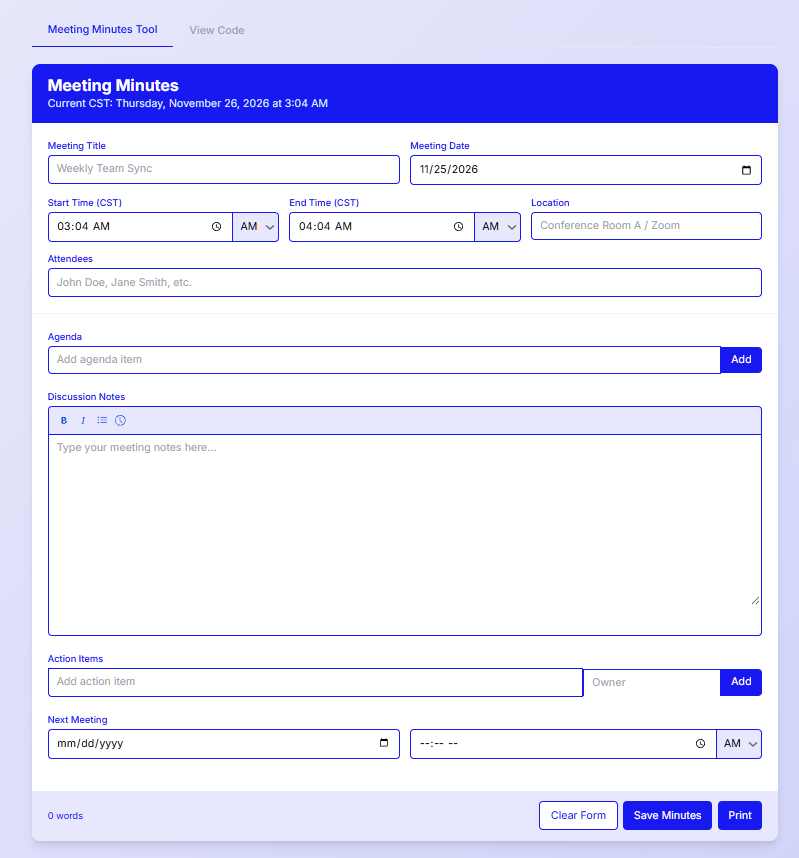

Structured meeting details
Captures title, date, start and end times, location, and attendees.
BROWSER UTILITY / IT OPERATIONS
A practical browser-based documentation utility I personally used during downtime and outage coordination in my previous IT Systems Specialist role.
WORKPLACE USE CASE
During my time as an IT Systems Specialist at a global CX BPO company, I personally used this tool to capture meeting notes during downtime or outage calls. It helped me organize discussions, timestamps, action items, and follow-up details into a consistent record that could be shared with the relevant teams through approved communication channels.
Captures title, date, start and end times, location, and attendees.
Provides a notes area with formatting controls and a one-click UTC+8 timestamp insertion feature.
Supports adding and removing agenda items, assigning action owners, and marking actions complete.
Includes next-meeting details, text-file export, and a printable meeting record.
WORKFLOW
The utility prepares the meeting record; it does not automatically email or send incident reports.
APPLICATION SHOWCASE

The interface brings meeting details, discussion notes, action tracking and follow-up information into one page, with convenient save and print controls.
IMPLEMENTATION
The HTML utility uses JavaScript to manage form entries and generate downloadable text records, with Tailwind CSS styling and a print layout. Its time display is configured for Asia/Shanghai (UTC+8), matching local Philippine time.
No original workplace incident records, attendees, client details or source file are published in this portfolio.
PROFESSIONAL SKILLS